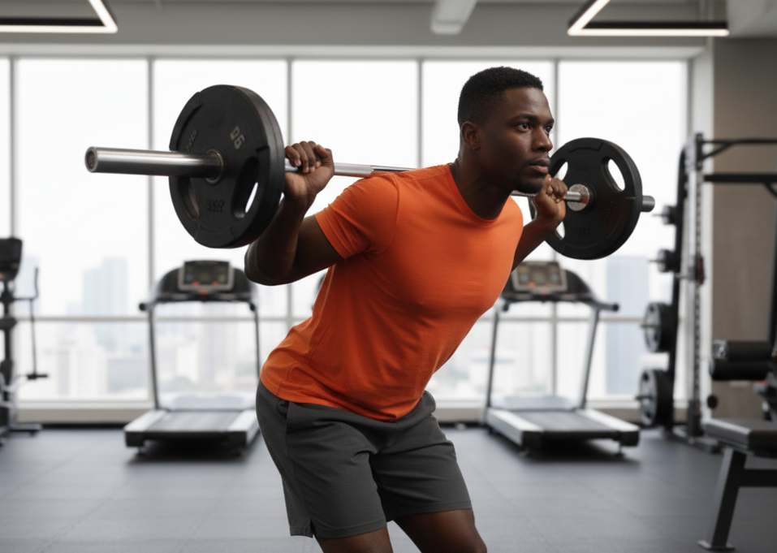

Peso Muerto Rumano

Con este ejercicio desarrollaras mucha fuerza en tus piernas.
Aqui podras encontrar como debes hacer este ejercicio.
Curl Femoral Acostado

Ejercicio preciso, clasico, tienes que probarlo.
Aqui podras encontrar como debes hacer este ejercicio.
Curl Femoral Sentado

De las mejores sensaciones que podras sentir en tu femoral.
Aqui podras encontrar como debes hacer este ejercicio.
Curl Femoral Parado

Una buena variacion para los ejercicios clasicos.
Aqui podras encontrar como debes hacer este ejercicio.
Good Morning
Trabaja el femoral como pocos ejercicios lo hacen.
Aqui podras encontrar como debes hacer este ejercicio.